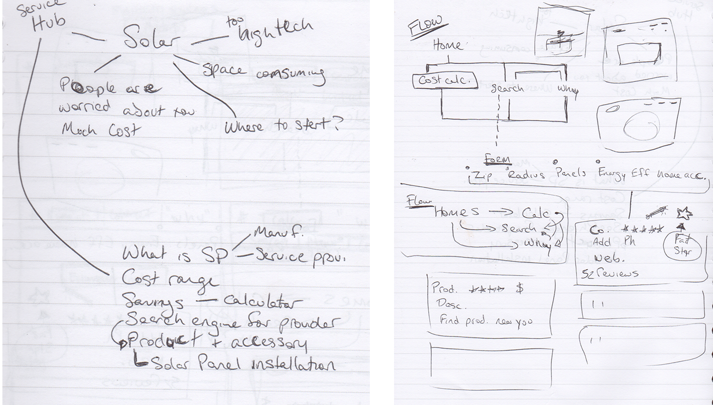

We chose to create the fictitious company, Helios, which would be a sort of hub, or Yelp-type of website for solar power. The group began with some rough brainstorming/ideation to come to a mutual understanding of what we think the problems to solve could be. We started with an audit of other solar energy sites and noting features we should consider for Helios.
Based on our findings and understanding from our first steps we created a survey with Google forms and shared it on social media. The survey's purpose was to gauge interest in alternative energy/solar power and understand how and if people take advantage of the technology, and finally what the barriers to embracing the technology might be.

Based on the survey results we were able to construct a user flow.

Before the user persona and journey were devoloped a style guide was created to so the team could be on the same visual page as we worked on our respective parts of the project.

Using the research and the style guide a user persona and journey was developed.